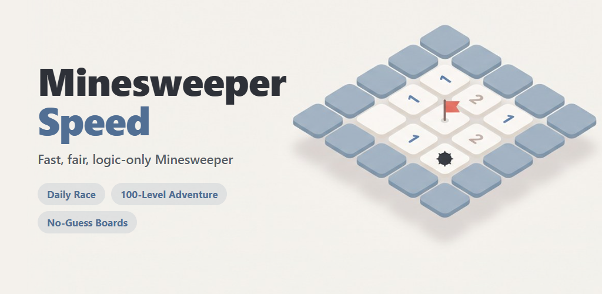

Minesweeper Speed
كاسحة ألغام كلاسيكية مجانية مصممة للسرعة: مبتدئ ومتوسط وخبير، نقرة أولى آمنة، وضع بلا تخمين، مغامرة من 100 مستوى، سباق يومي، ولوحات ترتيب وإنجازات ألعاب Google Play.
الصوليتير: السرعة
لعبة ورق الصوليتير الكلاسيكية كلوندايك مع سباق يومي. قابلة للحل 100%، بلا إنترنت

لماذا Minesweeper Speed؟
- ثلاثة مستويات كلاسيكية: مبتدئ 9×9 ومتوسط 16×16 وخبير 30×16، كاسحة الألغام التي تعرفها.
- نقرة أولى آمنة: لن تدوس لغمًا في حركتك الأولى.
- وضع بلا تخمين: كل لوحة تُحل بالتفكير لا بالحظ.
- مغامرة من 100 مستوى: 5 فصول وحتى 3 نجوم لكل مستوى.
- السباق اليومي: لوحة واحدة للعالم كله كل يوم.
- لوحات ترتيب عالمية و25 إنجازًا مع ألعاب Google Play.
- إعادة العرض: شاهد أسرع جولة لك حركةً بحركة وشاركها.
- سمتان عصرية وريترو كلاسيكي، كلتاهما بالوضع الداكن؛ وتكبير بالإصبعين في لوحة الخبير.
- متوفرة بـ 10 لغات منها العربية وEnglish وFrançais وEspañol.
أسئلة شائعة عن كاسحة الألغام
كيف تُلعب كاسحة الألغام؟
افتح المربعات؛ يبيّن كل رقم عدد الألغام الملاصقة للمربع. استنتج أماكن الألغام وضع عليها أعلامًا وافتح كل المربعات الآمنة لتفوز. في Minesweeper Speed النقرة الأولى آمنة دائمًا.
ما هي كاسحة الألغام بلا تخمين؟
في هذا الوضع يمكن حل كل لوحة بالمنطق وحده، فلن تضطر إلى تخمين 50/50.
هل Minesweeper Speed مجانية؟
نعم، التحميل واللعب مجانيان. تحتوي على إعلانات يمكن إزالتها بعملية شراء داخل التطبيق.
هل يمكنني اللعب دون تثبيت؟
نعم. كاسحة الألغام أونلاين تعمل في متصفح الكمبيوتر والهاتف. حمّل التطبيق للمغامرة والسباق اليومي ولوحات الترتيب.
هل يمكنني منافسة لاعبين آخرين؟
نعم. مع ألعاب Google Play توجد لوحات ترتيب عالمية للمستويات الثلاثة والسباق اليومي ونجوم المغامرة، إضافة إلى 25 إنجازًا.